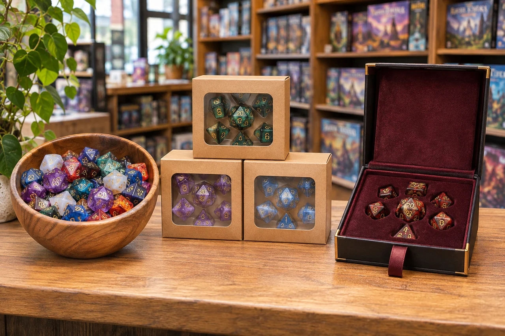

For a game store, themed RPG dice can make a familiar seven-piece set feel connected to a character, setting, campaign, or gift occasion. The buying challenge is not simply choosing attractive colors. A useful RPG dice assortment for game stores needs products with different jobs, legible numbers, accurate descriptions, packaging that suits the shelf, and a replenishment plan that does not tie up cash in near-duplicate designs.
Recent releases have put faction-based fantasy products back in the spotlight. That makes this a timely moment to review how themed dice collections are built and merchandised. It does not mean every retailer should buy a large order. This guide provides a decision framework for game stores, distributors, dice brands, and publishers: choose assortment roles, compare samples, plan a small test, and let the store's sales data decide what earns a reorder.
The quick answer: how should a store test faction-themed RPG dice?
- Choose roles, not just colors: core play, theme-led gift, premium display, or impulse add-on.
- Make differences easy to see: palette, number fill, material, finish, and package should help customers compare.
- Verify before promising: confirm contents, material, compatibility, MOQ, production timing, and rights for artwork.
- Measure the result: track units sold, units received, landed cost, returns, customer questions, and stockouts by SKU.
What the current D&D crossover says about themed dice lines
As of November 9, 2026, D&D Beyond lists November 17 as the full release date for D&D: World of Warcraft and describes the Icy Throne dice set as a digital preorder bonus. Separately, Sirius Dice has announced licensed physical Horde- and Alliance-themed Adventure Dice Sets. Trade coverage describes additional products, including treasure packs, a collectible oversized D20, and mini dice cups, as later waves planned for 2027. These are separate from D&D Beyond's digital dice bonus and are not DND Custom Dice products. Availability and release dates can vary by retailer and region, so verify a live listing before making a buying decision. See D&D Beyond's release overview, the Sirius Dice catalog, and ICv2's coverage of the licensed accessories line.
For a retailer, the useful lesson is collection architecture, not copying a licensed design. A central theme can be expressed through several product roles: an everyday dice set, a more collectible large die, a small accessory, or a giftable package. Each format addresses a different buying moment and shelf footprint. A retailer can use this idea to organize an original fantasy dice assortment without claiming a connection to a protected franchise.
A high-profile announcement is a signal to investigate, not a sales forecast. Local demand depends on the store's customer base, release timing, regional availability, preorder fulfillment, shelf visibility, and competing purchases. Before you commit to a themed RPG dice order, write down the reason the item might sell in your store and what evidence would change your mind. Our broader 2026 RPG dice trends guide explains how to separate a news signal from a testable retail hypothesis.
Build an assortment by customer job and product role
A dice wall can look varied while offering the same proposition repeatedly. If ten SKUs differ only by a small shade shift, customers may not understand why they should choose one over another, and staff may find it harder to explain the difference. Start by deciding what each SKU does for the store. Then choose themes and formats that fill those roles.
| Assortment role | Possible product format | Buyer question to answer | Test priority |
|---|---|---|---|
| Core play | Complete seven-piece polyhedral dice set in a clear, broadly appealing palette | Are the set contents, numbers, material, and price easy to understand? | Keep a reliable baseline for comparison |
| Theme-led choice | Original color family such as ember, deep sea, forest, arcane, or celestial | Does the theme look distinct on the shelf and appeal to a recognizable customer? | Test a small number of clearly separated themes |
| Premium display | Metal, sharp-edge resin, liquid-core, oversized, or gift-boxed set | Does the sample, package, and landed cost support the intended retail position? | Limit units until sample and customer response are known |
| Impulse or add-on | Single D20, small accessory, or low-footprint gift item | Can the customer see the price and use case without staff explanation? | Test near a relevant counter or campaign display |
| Event or limited drop | Short-run theme, seasonal colorway, or campaign-night selection | Is the delivery window confirmed, and what happens to remaining stock? | Buy only against a clear event plan and reorder path |
The table is a planning framework, not a universal sales mix. A store with weekly learn-to-play events may need more core sets and easy-to-read products. A shop with an established collector community may test a premium item. An online-first brand may care more about photography, package dimensions, and repeatable color consistency. Match the assortment to how your customers find and buy dice.
For a first themed test, select products that are different for a reason. For example, compare one warm, high-contrast palette with one cool, translucent palette, rather than ordering five nearly identical blue sets. If a premium product is under consideration, compare it with a core set so you can see whether the higher price point adds a distinct role or merely duplicates the same customer use. Browse our wholesale dice options for game stores and catalog formats to create a shortlist before you request samples.
Use a simple theme system customers can read at a glance
A strong faction-inspired dice collection feels related without making every SKU look interchangeable. A practical design system uses a small number of cues consistently: a primary color, an accent color, a number-fill color, a material or finish, and an original symbol where appropriate. A customer should be able to see the difference between two sets from normal display distance, while staff should be able to describe that difference in one sentence.
Separate themes with a controlled color palette
Choose two or three palette directions that contrast in hue and value. A dark red resin set with antique-gold numbers should not be confused with a transparent red set with black numbers. Similarly, two green sets may need different inclusions, number fills, or package accents to look like intentional choices rather than accidental duplicates. Keep a color reference for each SKU and compare samples under daylight, warm store lighting, and the lighting used for online photography.
Color alone is not a reliable way to communicate what is inside a package. Use a clear product name, a consistent SKU, and a short description of the material and set contents. When a theme depends on a symbol, use original artwork or artwork for which the business has permission. Avoid recreating a famous faction crest, character, in-game item, or distinctive licensed design just because customers recognize it.
Protect number contrast and practical readability
The number is functional information, not decoration. Test whether a customer can identify the result quickly on the D20 and other dice under the actual store lighting. Look at dark-on-dark combinations, metallic fills on reflective surfaces, translucent dice against a bright background, and tiny numbers near sharp edges. Rotate the die; a face that looks clear in a product photograph may be harder to read from an angle in a game.
A useful sample check is to place the dice at the normal shelf or table distance, ask several staff members to read a few faces without picking them up, then repeat with the set in hand. Record any face, finish, or lighting condition that causes hesitation. For inclusive design, do not assume that one high-contrast palette meets every player's needs. Ask for feedback from the people the design is intended to serve, and describe features accurately rather than making broad accessibility claims without testing.

Review a physical sample before treating a design as shelf-ready
Catalog images help with shortlisting, but they cannot confirm every manufacturing or retail detail. Ask for a physical sample or sample kit when finish, weight, number fill, packaging fit, or color consistency is part of the buying decision. Review the sample in the context where it will be sold, not only on a bright desk or a supplier's screen.
- Set completeness: count each die and confirm the package contents match the label.
- Number visibility: check the D20 first, then smaller or more complex faces from multiple angles.
- Finish and consistency: compare the dice within one set for color, polish, inclusions, edge quality, and number fill.
- Material and handling: confirm the supplier's stated material and any care instructions; feel whether the dice are suitable for the intended display and use.
- Packaging protection: check whether the dice move inside the package, scratch one another, or strain the insert or closure.
- Retail presentation: see whether the customer can understand the set, theme, and contents without opening the package.
- Reorder repeatability: ask how the approved sample relates to bulk production and what can vary between batches.
Keep a dated sample record with SKU, supplier reference, sample photos, approved color, number fill, material, package, and decision. If a product is custom, record which artwork and packaging files were approved. This is useful when a staff member places the reorder months later or when the supplier asks which version the store reviewed. Our readable dice buyer checklist and sample kit and catalog request page provide next steps for comparing options.
Make the theme legible in the package and on the shelf
Packaging is part of the product decision because it affects protection, shelf footprint, perceived value, and how quickly staff can replenish the display. A simple bag may suit an entry-level set or a broad assortment. A folding carton can provide a title panel and room for accurate contents. A tin, magnetic box, or fitted insert may make sense for a heavier or higher-value set, but it also adds size, cost, and potentially a separate packaging MOQ.
Plan the package around information a buyer needs at the shelf: product name, number of pieces, the types of dice included, confirmed material, theme description, and SKU or barcode area where applicable. Avoid vague claims such as "premium resin" or "balanced dice" unless the supplier can substantiate them and the business is comfortable making that claim. If the box hides the dice, use a real product photo or a clear color reference; if the dice are visible through a window, check reflections and glare in store lighting.
Give each theme a recognizable package system, then reserve one visible element for the individual SKU. This keeps the collection coherent but helps customers find the right colorway. Use a short theme descriptor instead of a long story on the front panel. Put care information, set contents, and compatibility notes where they can be read. For deeper packaging decisions, see our wholesale DND dice packaging guide and custom dice packaging options.
For customized dice lines, decide whether the first test needs fully custom dice, a catalog design with original packaging, or a limited custom mark on an existing product format. These are different scopes and can have different artwork, sample, and MOQ requirements. The custom DND dice materials, logo, packaging, and MOQ guide explains the decisions to settle before asking for a price.
Use a low-risk test plan instead of guessing demand
A test order should answer a question. "Will this color sell?" is too broad if the display, price, and customer segment are unknown. A better hypothesis is specific: "Our weekly D&D group asks for dark fantasy gifts, so we will test one high-contrast boxed theme beside our regular seven-piece sets for six weeks." Set a review date before the product arrives and decide what data you will record.
- Define the customer and occasion. Choose whether the item serves new players, campaign regulars, gift buyers, collectors, event visitors, or a branded product line.
- Choose a small comparison set. Select a few SKUs with meaningful differences in palette, material, packaging, or price position. Keep the rest of the assortment stable so the result is easier to interpret.
- Confirm the buying constraints. Ask about MOQ per SKU and packaging, sample availability, current lead time, carton quantities, shipping terms, and whether reorder production uses the same specification.
- Record the baseline. Note units received, opening stock, landed unit cost, shelf location, retail price, and date placed on display.
- Set a consistent measurement window. Include ordinary trading days and record campaign nights, conventions, promotions, or stockouts that could distort the result.
- Decide what happens next. Choose whether the SKU earns a reorder, needs a display or description change, should be tested in another color, or should be discontinued.
If local availability or a licensed release date is uncertain, do not promise a delivery date to customers based on a headline. Confirm the seller's actual preorder and shipment schedule, and keep licensed products distinct from your own original themed assortment. For the store's own wholesale assortment, review the wholesale dice program and MOQ guide before committing to a test quantity.
Measure sell-through, margin, and replenishment together
Unit sales alone do not tell the whole story. A theme may sell quickly because it had a strong display position, while a premium product may sell fewer units but contribute more gross profit per shelf slot. Record at least units received, units sold, remaining stock, landed cost, retail price, markdowns, returns or damage, and notable customer questions. If a product sells out early, note the stockout; the observed sales then understate potential demand.
One straightforward metric is sell-through over a fixed period. Shopify's inventory formula guide describes sell-through as units sold compared with units received in a matching period. For example, if a store receives 24 units of one themed set and sells 9 during its first 30 days, the period sell-through is 9 / 24 = 37.5%. This is an illustrative calculation, not a target or industry benchmark. Compare products over equivalent periods and account for promotions, seasonality, display position, and stockouts. See Shopify's inventory formula reference for the calculation and related retail metrics.
Then compare gross margin using the landed unit cost, not only the supplier's quoted product price. A simple planning formula is: (retail price - landed unit cost) / retail price x 100. Landed cost may include the product, packaging, freight, duties or taxes where applicable, and other per-unit costs. This is a planning calculation, not a substitute for the store's accounting method. A high sell-through at a weak margin may not justify a deep reorder; a slower premium product may need a different display or seasonal review before you decide.
For replenishment, estimate an initial reorder point from sales velocity and supplier lead time: average weekly units sold x lead time in weeks + safety stock. Example: if a core set sells about 2 units per week, replenishment takes 6 weeks, and the store wants 4 units of buffer stock, the starting reorder point is 16 units (2 x 6 + 4). Treat this as a planning estimate. Confirm production and shipping lead times with the supplier, adjust for seasonality, and do not use it for a one-off limited item with no repeat supply.
Review the assortment at SKU level. If the forest theme sells while the other colorways sit, reorder the proven SKU rather than repeating the entire set. If customers like the dice but do not understand what is included, improve the package or shelf label before changing the design. If multiple stores are involved, compare location-level results before assuming that one shop's winner will work everywhere. The aim is a repeatable buying decision, not a claim that one theme is universally popular.
What to include in a wholesale RPG dice quote brief
A useful quote request helps a supplier respond to the real project instead of guessing from a phrase such as "custom faction dice." Send a concise brief with the decisions you have made and the questions you still need answered.
- Buyer type: game store, distributor, online retailer, publisher, dice brand, event organizer, or subscription box.
- Product roles and SKU list: complete seven-piece sets, D20-only items, premium formats, or a mixed assortment.
- Target quantity: test quantity and possible reorder range, separated by SKU where possible.
- Design direction: original theme, color references, number-fill preference, material, finish, and any artwork supplied.
- Packaging: bag, retail box, tin, magnetic box, inserts, display carton, barcode area, or private-label print.
- Sample needs: stock sample, color reference, pre-production sample, or packaging sample.
- Timing and destination: delivery country, target arrival window, freight-forwarder details if applicable, and event or launch date.
- Rights and claims: confirm that supplied logos and artwork are original, licensed, or otherwise cleared for the intended product use.
Ask the supplier to identify which costs are one-time and which recur on reorders, whether MOQ differs by dice and package, what the sample represents, what can change in production, and what is excluded from the quote. If a deadline matters, request the current production and shipping assumptions in writing. You can compare available wholesale dice for game stores, request catalog and sample options, or send your project details through the wholesale quote request form.
Retail checklist before you reorder a themed dice SKU
- The SKU fills a clear customer need and is visibly different from nearby products.
- A physical sample passed number-legibility, finish, package-fit, and display checks.
- The label accurately states contents, material, and compatibility.
- The product's landed cost and margin fit the store's target price position.
- Sales were measured over a defined period, with promotions and stockouts recorded.
- MOQ, reorder lead time, packaging availability, and batch repeatability are confirmed.
- Artwork, logos, and any licensed visual elements are cleared for the intended commercial use.
Faction-themed RPG dice FAQ
What themed RPG dice should a game store test first?
Keep the test narrow: maintain a dependable core seven-piece set, add a few colorways that are clearly different, and consider one premium or impulse product only if it fits the store's customers and display. Use samples and local sales data instead of assuming a theme will sell everywhere.
How many dice SKUs should be in a first test order?
There is no universal number. Start with the smallest group that lets you compare distinct product roles without splitting the order across many near-duplicates. Confirm supplier MOQ by SKU, material, and packaging before setting the quantity.
How do I calculate sell-through for themed dice?
For a defined matching period, divide units sold by units received and multiply by 100. If 9 of 24 received sets sell during the first 30 days, the illustrative sell-through is 37.5%. Track stockouts and promotions so the result is interpreted correctly.
What should I check on a wholesale RPG dice sample?
Check the set contents, number contrast, finish, consistency, material claims, package protection, shelf visibility, and how the sample compares with the supplier's planned bulk process.
Can I use a popular game's faction logo on custom dice?
Do not assume that a public reference or fan recognition grants commercial rights. Use original artwork or obtain the appropriate permission or license for trademarks and copyrighted artwork. This article is not legal advice.
What details help a dice supplier quote a themed assortment?
Provide buyer type, SKU roles, target quantities, material and finish, color references, packaging, sample needs, destination, target timing, and confirmation that any supplied artwork is cleared for commercial use.
Sources used for this guide
- D&D Beyond: Everything You Need to Know About D&D: World of Warcraft - official release information and digital preorder details.
- Sirius Dice: Current product catalog - official listings for licensed dice and accessory formats referenced as a product-line example.
- ICv2: Sirius Dice Announces Dungeons & Dragons x World of Warcraft Accessories Line - trade reporting on the themed sets and planned accessory release waves.
- Shopify: 5 Common Inventory Management Formulas - reference for the sell-through calculation used in the illustrative example.
- U.S. Copyright Office: What Visual and Graphic Artists Should Know About Copyright - overview of visual artwork rights and permission.
- USPTO: What Is a Trademark? - overview of brand-identifying names and logos.
The cited release and retail references support the specific examples and calculation described here. Assortment, sample, and reorder recommendations are practical editorial guidance; confirm local demand, supplier terms, and applicable rights before purchasing or manufacturing.
Plan an original themed dice test order.
Share your store type, target quantities, product roles, materials, packaging, destination, and timing. We can help you shortlist wholesale options and clarify sample availability, MOQ, and quote assumptions.
For your next step, compare the wholesale dice MOQ guide, explore fantasy RPG dice themes, or use the bulk DND dice buying guide for game stores to build a wider sourcing plan.